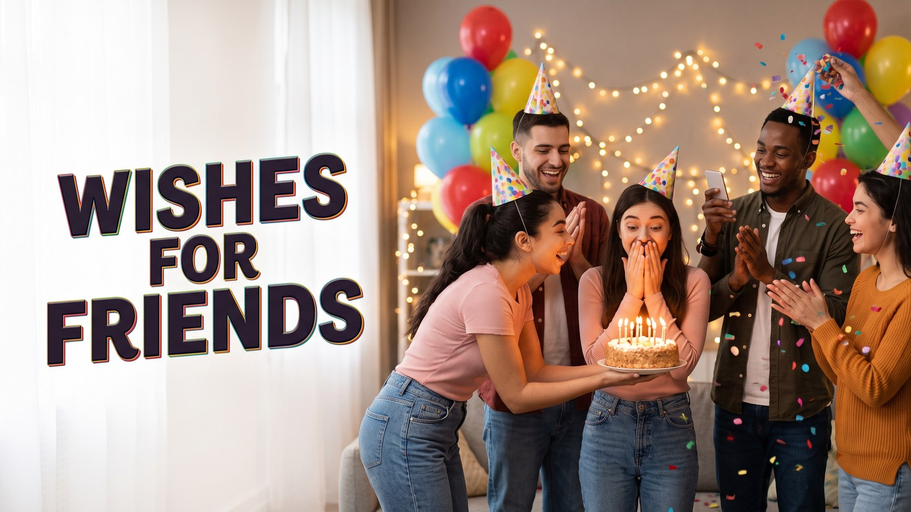

Wedding Anniversary Wishes for Couples: Messages by Year
Published October 10, 2026 · Updated October 10, 2026 · By EventBuzz Team

An anniversary is a wedding day that kept its promise. Every year a couple marks together is proof that love is not just a feeling but a daily choice — and your message gets to honour that. Every wish below was written fresh for EventBuzz: sweet lines for romantics, gentle humour for the couple who laugh through everything, and milestone messages matched to the year they are celebrating. For the very first celebration of all, our wedding wishes hub is where the story begins.
Sweet Anniversary Wishes for Couples
Heartfelt lines for couples whose love story inspires everyone around them.
- Happy anniversary to two people who prove, year after year, that real love is not found — it is built, patiently, together. Congratulations.
- Your marriage is my favourite love story, and it gets better with every chapter. Happy anniversary!
- May the love you feel today be only a shadow of the love you will feel in fifty years. Happy anniversary to a truly beautiful couple.
- Watching you two choose kindness, patience and laughter every day has taught me more about love than any book. Happy anniversary.
- Happy anniversary! May your home always echo with the same laughter we heard on your wedding day.
- To the couple who still hold hands like newlyweds: may that never change. Happy anniversary.
- Another year of you two being everyone's relationship goals. Happy anniversary — keep shining.
- Wishing you a day as warm and wonderful as the love you have built together. Happy anniversary!
Funny Anniversary Wishes for Couples
Gentle teasing for couples who would rather laugh than cry happy tears.
- Happy anniversary! Another year of pretending to listen to each other's stories like it is the first time. That is commitment.
- Congratulations on surviving another year of someone stealing the blanket, the fries and the remote. True love, clearly.
- Marriage is just dating with a shared laundry basket. You two make it look glamorous. Happy anniversary!
- Happy anniversary to the couple who still like each other. That is rarer than loving each other, and you have managed both.
- Another year, another level unlocked. May your Wi-Fi always be strong and your arguments always end in snacks.
- Cheers to the couple who finish each other's sentences — mostly to correct them. Happy anniversary!
Anniversary Wishes by Milestone Year
Each milestone has a traditional gift and its own kind of magic. Match your words to the year.
1st Anniversary — Paper
- Happy 1st anniversary! Your first year is written — may every page after this one be even better than the last.
- One year down, forever to go. Congratulations on a beautiful first chapter.
5th Anniversary — Wood
- Happy 5th anniversary! Like wood, your love has grown strong roots and weathered every season so far. May it keep growing taller.
- Five years of building something sturdy and beautiful. Congratulations, you two.
10th Anniversary — Tin
- A whole decade of love! Happy 10th anniversary to a couple who shine brighter every year. Here is to ten more, then ten more after that.
- Ten years, countless memories, one unbreakable team. Happy anniversary!
25th Anniversary — Silver
- Twenty-five years of silver-standard love. Happy silver anniversary to a couple whose marriage gleams brighter with every passing year.
- A quarter of a century of choosing each other. What a treasure. Happy 25th anniversary!
50th Anniversary — Golden
- Fifty golden years! Your love is the rarest treasure any family could hold. Happy golden anniversary to a legendary couple.
- Half a century of love, patience and laughter — you are the story every grandchild will tell. Happy 50th anniversary!
Short Anniversary Lines for WhatsApp and Cards
Small lines, big feeling — ready to copy and send.
- Happy anniversary, lovebirds! Another year of wonderful. 💛
- To my favourite couple: every year suits you. Happy anniversary!
- Cheers to love that only grows. Happy anniversary!
- Same time next year? Happy anniversary, you two.
- Wishing you many more years of us-third-wheeling your romance. Happy anniversary!
- Happy anniversary! May your coffee be strong and your love stronger.
Frequently Asked Questions
What is a good anniversary wish for a couple?
One that names their year together and one thing you genuinely admire about them: "Happy 10th anniversary! A decade in, and you still laugh like newlyweds. May the next ten be even lighter."
What are the traditional anniversary gifts by year?
The classics are paper for the 1st, wood for the 5th, tin for the 10th, silver for the 25th and gold for the 50th. Matching a small gift to the year's material makes your card feel extra thoughtful.
How do I write an anniversary message for my own partner?
Be specific. Mention one moment from this year, one thing you are grateful for, and one thing you are looking forward to. Specific beats poetic every time, because it proves you were paying attention.
Is a funny anniversary wish appropriate?
Yes, for couples who love to laugh — keep the teasing affectionate and aim it at shared habits, never at either person's flaws or family. Sweet wishes are the safer choice for milestone parties with mixed guests.
Can I use these anniversary wishes in cards and posts?
Yes. Every message here is original to EventBuzz and free for personal use in cards, WhatsApp messages, captions and speeches. Adding the couple's names and their year makes any line feel personal.
Conclusion
Every anniversary is a small victory worth celebrating out loud. Choose the wish that matches their year and their spirit, and send it before the day slips by. For the most important anniversary of all, our anniversary wishes for parents will help you thank the couple who started your own story.
Happy anniversary to every couple still choosing each other — year after beautiful year.